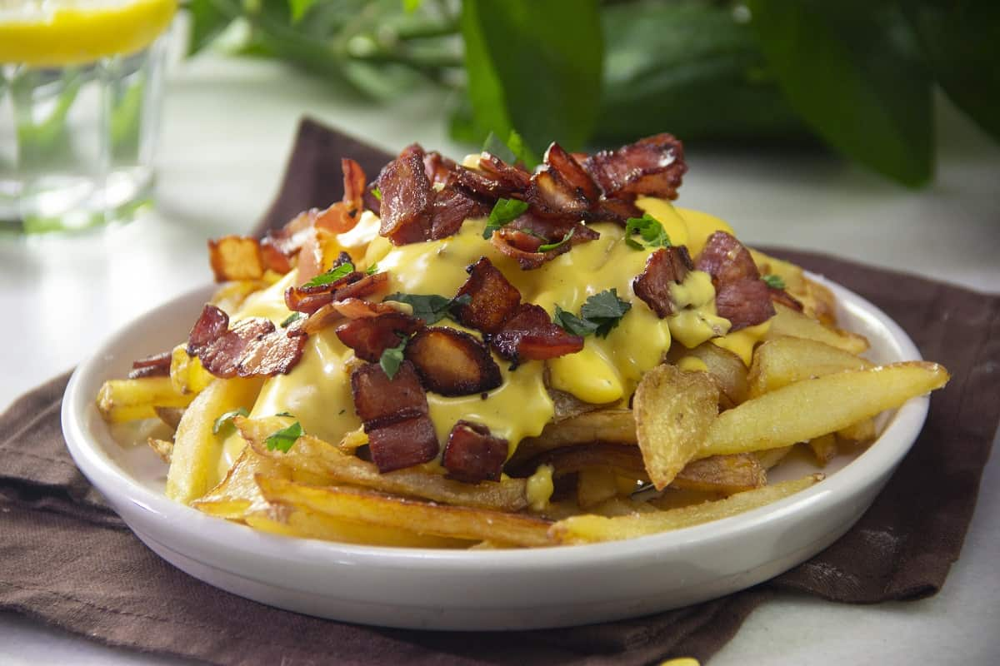

Papas fritas baston
Recetas de papas fritas caseras.

Ingredientes
- Utilizar 3 o 4 papas (300 gr)
- Aceite
- Sal
Elaboración
- Pelar las papas
- Cortarlas en baston de 8mm x 8mm
- Colocar aceite abundante en un sertén y calentar
- Introducir las papas dentro del aceite con cuidado de no salpicar
- Cocinar hasta que esten doradas
- Retirar, emplatar y salar a gusto
__________________________________________________________